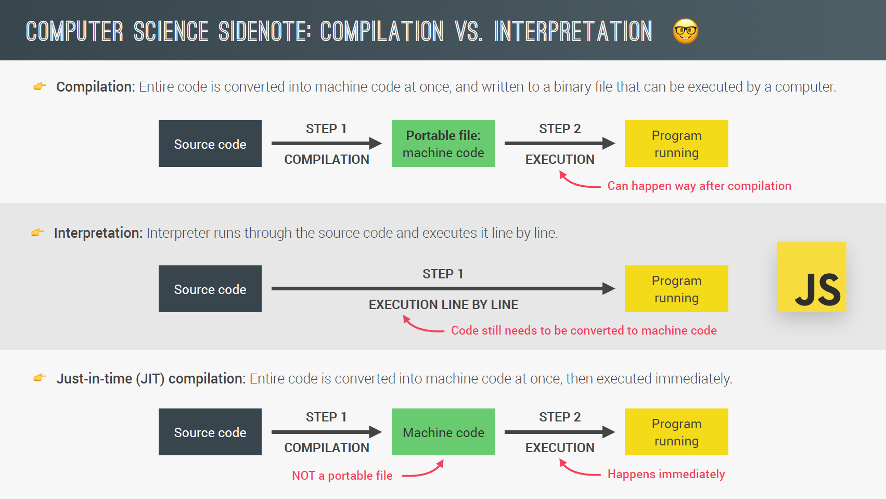
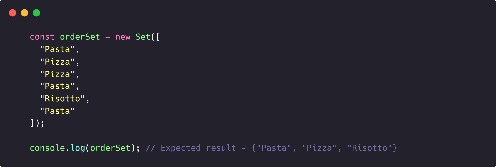

LET, CONST and VAR
let and const were introduced in ES6. We use let when we want to
allow a variable to change its value in the future,
we use
const when we don't want the same (immutable variable). Const
variables cannot be initialized undeclared.
By default, we should use const.
STRINGS AND TEMPLATE LITERALS
We can use backticks `` to declare strings anywhere.
Using ``,
creates a newline when we start writing on a new line.
We can
do any JS inside the curly braces.
TYPE CONVERSION AND COERCION
Type conversion - When we manually convert a data type.
Type
coercion - When JavaScript does it automatically for us. To convert
a string to a number, use Number() function. Example -
To convert a number to a string, use String() function. Examples of
type coercion -
NOTE - Only + operator coverts numbers to strings, every other
mathematical or logical operator converts strings to number by type
coercion.
TRUTHY AND FALSY VALUES
To convert any string/number to boolean, we can use Boolean()
function.
Falsy values - These are the values that when
converted to boolean outputs false. They are
1) 0
2)
Empty string ('')
3) undefined
4) null
5) NaN
Truthy values - Apart from the above values, all the other
values output truth when converted to boolean.
USING STRICT MODE
To activate strict mode, we have to write ("use strict";) at the top
of the JS file.
It prevents us from creating new variables when
we mis-type a variable name and therefore create a new one, by
throwing an error.
FUNCTION DECLARATIONS VS. EXPRESSIONS AND ARROW FUNCTIONS
There are 3 ways to define a function, they are-
1) Function
declaration - In this way, we can first call a function and then
later define it in the code below. Example -
2) Function expression - In this way, we CANNOT first call a
function and then later define it in the code below. Example -
3) Arrow functions - This way is best for writing one line
functions.
Example 1 - This example code has no parenthesis
for parameter and no return word.
Example 2 -
BASIC ARRAY OPERATIONS (METHODS)
1) arrayName.push(newArrayElement) - This method adds an element at
the end of the array. This method returns the new length of the
array.
2) arrayName.unshift(newArrayElement) - This method
adds an element at the start of the array. This method returns the
new length of the array.
3) arrayName.pop() - This method
removes an element from the end of the array. This method returns
the removed element of the array.
4) arrayName.shift() - This
method removes an element from the start of the array. This method
returns the removed element of the array.
5)
arrayName.indexOf(arrayElement) - This method returns the index of
the array element that we type in. It returns -1 if that element
does not exists in the array.
6)
arrayName.includes(arrayElement) - This method returns true or false
depending that element exists in the array or not.
JS OBJECTS
When we try to access a property that does not exists, we get
undefined as return value.
Difference between dot and bracket
notation -
NOTE - We use bracket notation whenever we want to
use a variable name to refer to a property.
We can even store functions in objects because function expressions
are just values. Object methods are just functions, that are defined
inside the object. Example -
The best practice to call an object method is to call it once and
then store it's result in a variable.
Example -
ABOUT JAVASCRIPT
JavaScript properties -
1.
High level - In JS, we don't have to manage
memory. It is automatically done by the computer.
2.
Garbage-Collected - It automatically cleans
up unused memory.
3.
Interpreted or just-in-time compiled -
First the whole code gets compiled inside the JS engine and then it
gets executed.
4. Multi-paradigm -
a) Procedural programming
b) Object-oriented programming
c) Functional programming
5.
Prototype-based object-oriented - Almost
everything in JS is objects except for primitive datatypes such as
numbers, booleans.
6.
First class functions - This simply means
that functions are just treated as variables. We can pass them into
other functions and return them from functions.
7.
Dynamically typed - Variable types are not
defined while declaring them, they become known only during the
runtime. Datatype of variable is automatically changed.
8.
Single-thread
9.
Non-blocking event loop
COMPILATION VS INTERPRETATION VS JUST-IN-TIME (JIT) COMPILATION
1. Compilation - Entire code is coverted to
machine code at once, and written to a binary file that can be later
executed by the computer.
2. Interpretation - Interpreter runs
through the source code and executes it line by line.
3. Just-in-time compilation - Entire
code is converted to machine code at once and then is executed
immediately.
JavaScript Engine = Call Stack + Memory Heap
Top level code - Code that is NOT
inside any function.

EXECUTION CONTEXT
Environment in which a piece of JS code is executed. It stores all
the necessary information for some code to be executed.
Execution context is the pizza box where we eat the pizza.
It contains -
1. Variable Environment It contains -
a) let, const and var declarations
b) Function
declarations
c) argument objects
2. Scope Chain
3.
this keyword
NOTE - Arrow functions do not contain argument
object and this keyword.
HOW EXECUTION OF JS CODE HAPPENS
1. Creation of GLOBAL EXECUTION CONTEXT for top level code.
2.
Execution of top-level code (inside Global execution context).
3. Execution of functions and waiting for callbacks (For each
function call, a new execution context is created).
Call Stack = All the execution context together.
Call Stack is a "place" where execution contexts get stacked
on top of each other, to keep track of where we are in the execution
process.
In the call stack, once a function is CALLED inside the JS
code, it's execution context is created, once that function gets
executed then only the EC below gets executed.
For each
function call a new EC gets stacked in the call stack and gets
executed first, unless it has a function call inside it to another
function.
SCOPING/SCOPE CHAIN
Scope - Environment in which a certain variable is declared. There
are
1. Global scope
2. Function/local scope
3.
Block scope - Variables are accessible only inside block (if block,
for loop block, etc). This only applies to let and const variables.
let/const are block-scope and var is function-scope.
NOTE - In strict mode, functions are also
block scoped, this means, a function defined inside a code block is
accessible inside that block only.
Lexical Scoping - Scoping is
controlled by the placement of functions and blocks in the code.
JS looks for variables inside the current scope and then
outside the current scope. If a variable with the same name exists
inside the current scope as well as outside it, then the one in the
current scope will be used.
Check out the image below.
HOISTING
Hoisting - Makes some types of variable
accessible/usable in the code before they are actually declared.
Variables are lifted to the top of their scope.
Before execution, code is scanned for variable declarations,
and for each variable, a new property is created in the VARIABLE
ENVIRONMENT OBJECT.
Only function declarations and variables declared with var are
hoisted. Variables declared with var have an initial value of
"undefined".
Check out the image below.
Temporal Dead Zone -
It's basically the region of the scope in which the variable is defined,
but can't be used in any way. So it is as if the variable didn't even exist.
Each and every let and const variable get their own Temporal Dead Zone that starts at the beginning of the scope until the line where it is defined. The variable is only safe to use after the TDZ.
THIS KEYWORD
-> "this" keyword is basically a special variable that is created
for every execution context and therefore every function.
It will always take the value of the owner of the function in
which, the this keyword is used.
The value of the "this" keyword is not static. It's not always
the same. It depends on how the function is actually called. And its
value is only assigned when the function is actually called.
This keyword points to -
1. In case of methods -
Object that is calling the method
2. In case of simple
function call - undefined (only in strict mode, otherwise it points
to window object)
3. In case of Arrow functions - this of
surrounding function/parent scope (lexical this)
4. In case of
Event listener - DOM element that the handler is attached to
If we console.log(this); We will get the window object. It is
the parent object of the global scope.
FOUR DIFFERENT WAYS IN WHICH FUNCTIONS CAN BE CALLED
1. Calling a function as an object method:
Here, "this" = Object that is CALLING the method.
When we call a method, the this keyword inside that method
will simply point to the object on which the method is called.
Examples -
2. Simply calling function as a normal function:
Here, "this" = undefined
However, that is only valid for strict mode. So if you're not
in strict mode, this will actually point to the global object,
which in case of the browser is the window object.
Example -
3. Arrow functions
Here, "this" =
"this" of parent function (lexical this)
Arrow functions do not get their own "this" keyword. Instead,
if you use the "this" keyword in an arrow function,it will simply be
the "this" keyword of the surrounding function which is the parent
function. In technical terms, this is called the 'lexical "this"
keyword'.
4. Event listener "this"
Here, "this" = DOM element that the handler is attached to
If a function is called as an event listener, then the this
keyword will always point to the DOM element that the handler
function is attached to.
The "this" keyword points to the window object in three cases:
a. if the "this" keyword is outside of any function (just
outside in global scope) Example -
b. If the lexical scope (parent scope) of arrow function is global
scope
Example -
c. In case of regular function if you are not using strict mode
Example -
Never use arrow functions to define methods.
PRIMITIVES VS REFERENCE TYPES
Primitive types are stored in the call stack. Reference types are
stored in the memory heap.
when we declare a variable as an object, an identifier
is created, which points to a piece of memory in the call stack,
which in turn points to a piece of memory in the memory heap. And
that is where the object is actually stored. And it works this way
because objects might be too large to be stored in the stack.
Instead they are stored in the heap, which is like an almost
unlimited memory pool. And the stack just keeps a reference to where
the object is actually stored in the heap so that it can find it
whenever necessary. NOTE - piece of memory = memory address
Check out the image below.
SOMETHING COOL
DESTRUCTING ARRAYS
It means to covert the elements of arrays into individual variables.
Example -
To switch the values of 2 variables, we can again use destructing
arrays. This is called mutating variables.
Example -
Nested destructing - Example
We can also set the variables to default value. Example -
DESTRUCTING OBJECTS
Same as destructing arrays.
Exaple -
NOTE - Here property name should be same as property name in the
object from which we are copying values.
Nested objects destructing -
THE SPREAD OPERATOR "..."
It spreads the values of an array separately. Example -
To copy an array -
To concat two arrays -
Example of how to use spread operator to give multiple inputs to a
function.
Using spread operator to make a new object -
THE REST OPERATOR "..."
It has the same syntax as the spread operator, but it does the
opposite of it.
It packs the separate variables into an array.
Examples -
Using rest operator to create objects - Same as arrays, it creates
an object instead of an array. Example -
Using rest operator in functions - Here we pass numbers separated by
a comma, even though the function expects only a single input. The
rest operator here, converts the separate numbers into an array.
This method is more preferred because now we can input separate
numbers as well as arrays.
SHORT CIRCUITING (&& AND ||)
|| operator -
It is the same as
logical OR operator. It will check the first value, if that's true,
it will return that value, if it's false, it will move to the next
value. It will continue doing this till a truthy value is reached.
If all the values are falsey, it will return the last value.
This returns the first truthy value or if all the values
are falsey, it will return the last falsey value.
NOTE - Logical operators Use ANY data type, return ANY data
type, follows short-circuiting.
EXAMPLES -
Nullish Coalescing operator ?? -
It
is same as || operator, only diff is that, this operator short
circuits based on Nullish values instead of falsey values.
NOTE - Nullish values are null and undefined only (not 0 or
"").
EXAMPLE -
&& operator -
This returns the first
falsey value or if all the values are truthy, it will return the
last truthy value.
EXAMPLES -
THE FOR OF LOOP
Examples -
OPTIONAL CHAINING (FEATURE OF ES2020)
It is used for chaining nested objects. It checks wether the
property written before "?" exists or not.
Example -
Another Example -
Optional Chaining also works for methods. Here it comes b/w the
method name and parameters.
Example -
Optional chaining also works for arrays. It basically checks if an
array is empty.
Example -
LOOPING OVER OBJECTS (OBJECT.KEYS(), OBEJCT.VALUES(),
OBJECT.ENTRIES())
We can even loop over objects.
Property NAMES
- This will create an array of property names.
Example -
Property VALUES - This will create an array
of property values.
Example -
Entire object - This will create an array,
with each element being a key-value pair.
Example -
SETS
It is another data structure that only stores unique values.
Example -

They can be used for all iterables.
Example -
There length can be calculated using the "size" method.
It can also be checked if the set includes some element using "has"
method.
Example -
We can add elements to sets using "add" method, and we can remove
elements using "delete" method.
We can convert a set to an array -
MAPS
Maps are also a data structure that works similar to objects apart
from the fact that keys can be anything in maps whereas in objects,
they can only be strings.
Example -
To add an entry to map, we use set() property.
Example -
We can even chain the set() properties.
Example -
We can delete entries using delete() property. It also has has() and
size() method.
STRINGS
Examples -
length method
indexOf() method
lastIndexOf() method - This gives the index
of last occurence
slice() method -
slice(startingIndex, endingIndex)
If we only give
startingIndex, it will extract the whole string starting from
startingIndex.
startingIndex is included and endingIndex is
excluded.
Length of new string = endingIndex - startingIndex
Examples -
We can also use negative index, which starts from end.
NOTE -
Last character has the index = -1
Examples -
Changing case -
.toLowerCase()
.toUpperCase()
Example - Convert "AyuSH" to "AYush"
Removing white-spaces -
.trim()
Replacing strings -
.replace("part of
string to remove", "new string to be added their")
Example -
We can also use .replaceAll().
Booleans - These methods returns
booleans.
.includes()
.startsWith()
.endsWith()
Example -
Split and join
split() is to split a
big string into array elements on the basis of a separator and
vice-versa for join().
Example -
Example - We want to capitalize the name passsed into the function.
Padding - This method adds a specific
character to the string.
"string".padStart(final length of the
string, Character to be added)
Example -
"string".padEnd(final length of the string, Character to be added)
Example -
DEFAULT PARAMETERS
Example -
IMPORTANT
When we pass a primitive type as an argument on a function, the
function makes a copy of the ORIGINAL VALUE, and works with it.
On the other hand, when we pass an object as an argument on a
function, the function makes a copy of the REFERENCE that points to
the place of the memory where the object is stored. This copy is a
value itself, is not a reference. Because all of this, the original
object can be modified from inside of a function.
JavaScript is diff -
In programming languages, Arguments can be passed by value, or
passed by reference
JS has not passing by reference, only passing by value...
So, when we pass primitive values, the function works with a value,
which is a copy of the original value
When we pass a reference type, the function works with a value that
address to the spot where the original object is in the memory
(still is not a reference)
We should never change the values of non-primitives like objects
inside a function, because that can have unforseeable circumstances.
FIRST-CLASS FUNCTIONS -
It means that functions are simply values and just another type of
objects. Therefore -
We can store functions in variables or as object properties.
We can pass functions as arguments in other functions.
We can return functions from functions.
We can call methods on functions.
HIGHER-ORDER FUNCTIONS -
It basically is a function that recieves a func as an arguement or
it returns a func or both.
Example -
THE CALL, APPLY AND BIND METHOD
CALL METHOD -
It is a method that is applied to function because functions are
objects. Here the first argument defines that what should "this"
keyword be equal to.
APPLY METHOD -
Same as call method, only diff is that, second argument is an array
of the arguments.
BIND METHOD -
This method does not call the function to which it is attached,
instead it returns a new function where the "this" keyword is
permanently set.
Note - If we try to save the call or apply
method, we will get an error, because call() invokes a function
immediately, whereas bind() creates a copy of the function with a
preset value of 'this'.
If we want to call a function later
with preset arguments, then we use bind() method.
With Event Listeners
Partial application -
This means some
of the arguments of a function are predefined.
IIFE - Immediately Invoked Function Expression
It's just a function expression that is only executed once.
We
have to wrap the function expression around ().
Example -
AN EXAMPLE OF FUNCTION RETURNING FUNCTION -
SLICE METHOD
Slices the array into different parts according to input parameters.
Returns a new array.
Excludes the ending element.
SYNTAX - arrayName.slice(startingElement,
endingElement);
SPLICE METHOD
Same as slice()
This mutates the original array and removes the elements that are
mentioned in splice method.
Returns the removed elements.
Here, the second argument defines the number of elements to be
removed (deleteCount).
SYNTAX - arrayName.splice(startingElement,
deleteCount);
REVERSE METHOD
Reverses the array.
Mutates the original array.
Returns the reversed array.
CONCAT METHOD
Joins 2 arrays.
Does not mutate the original array.
JOIN METHOD
Returns a new string of all the elements joined together by a
defined parameter.
Does not mutate the original array.
FOR OF LOOP
FOR EACH LOOP
The forEach() method calls a function (a callback function) once for
each array element.
Break and continue do not work in forEach loop.
SYNTAX - arrayName.forEach(
function(element, index, the whole array) {})
MAP METHOD
Map returns a new array containing the results of, applied
operations on all original array elements.
Does not change the original array.
We can also just use the element parameter.
SYNTAX - array.map( function (element,
index, the whole array){} )
FILTER METHOD
Filter returns a new array containing the array elements that pass a
specified test condition.
SYNTAX - array.filter(function (element,
index of the current element, the whole array))
REDUCE METHOD
Reduce boils ("reduces") all array elements down to one single value
and returns that value.
accumulator -> SNOWBALL -> It is the value that is RETURNED in the
last iteration.
SYNTAX - array.reduce(function
(accumulator, current element, index of current element, whole
array) {}, initial value of the accumulator)
Another example -
CHAINING DIFFERENT METHODS
FILTER METHOD
This returns the first element of the array that satisfies the
specified condition.
Diff b/w filter and find is that filter returns an array of all the
elements that satisfies the given condition, while find returns just
the first element.
Returns undefined if no such property is found.
SYNTAX - array.find(function (current
element, index of current element, whole array) {})
Find method is really useful with arrays of objects as we can find
an object (array element) with its property value. EXAMPLE -